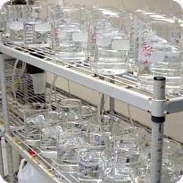

|
NPDES - ACUTE Bioassay
This toxicity test is conducted on municipal wastewaters that are
directly discharged into receiving waters (streams, rivers, ocean,
etc.) or on industrial
dischargers who may or may not have their own outfall. There are
several editions of the EPA's acute testing
manual, each having minor differences which
may significantly influence the outcome of the test. The most recent
edition, the fifth (EPA-821-R-02-012) calls for using fish of one to 14
days in age and a
minimum renewal at 48 hours. Both of these requirements tend to make
this test more sensitive than previous editions of the test method. A
detailed test
protocol of this method is given below. Also the entire acute manual is
available directly from EPA's homepage. You may access it by clicking here.
Our
laboratory is also certified to conduct toxicity tests following the
older fourth edition protocol (EPA/600/4-90/027F). This manual may be
still referenced in
NPDES permits and differs little from the new manual. The choice of
which protocol is often directed by regional water quality control
boards and should be
specified in the NPDES permit. Any protocol modifications are also usually listed in the NPDES permit.
The basic acute test uses a series of five test chambers each
containing a specific concentration of the effluent diluted with
standard laboratory water plus a
control. A common dilution series such as: 100%, 50%, 25%, 12.5%, and
6.25% may be used. The dilution series may be specified in the NPDES
permit and
may differ between permits to reflect individual regulatory concerns.
Ten test fish are placed into each chamber and their survival and water
quality of the test
chambers are monitored for 96 hours. All tests are conducted in replicate
(2, 4, or 5 replicates, depending upon species). The number of fish
surviving at
each test concentration and in the control chamber at the end of the
test are used to mathematically calculate the sample concentration
toxic to 50% of the test
fish. This known as the LC50. Toxicity units can then be calculated by
dividing 100 by the LC50 value. For example, an LC50 of 75% would yield
a TU of
1.3 TUa (100/75 Toxic Units acute). This test protocol can also be
conducted as a percent survival bioassay where 100% sample is divided
into two or more
test tanks, fish are added, and water quality and survival are
monitored for 96 hours. Results are then reported as percent survival
in 100% effluent.
Other important considerations:
- Test organism - there are over 45 different
species listed in the EPA manual, ranging from water fleas to rainbow
trout, however fathead minnows are by
far the most commonly used organism;
- Length of test - tests can range from 24 to 96 hours in length with 48 and 96 hour tests the most common;
- Static or static renewal - in static tests solutions are mixed at the beginning of the test with test organisms exposed to the same solution throughout the
test, while in static renewal tests solutions are mixed and changed daily or at a minimum every 48 hours (these are much more labor intensive and therefore
more expensive).
SPECIAL CONDITIONS: Sample hold time is 36 hours.
Sample volumes are: one gallon for static and two and a half gallons
for some static-renewal tests. Samples should be kept cold (4oC) prior to and during
shipment to the laboratory. Sample containers, coolers and blue ice
available upon request. We
recommend shipping via Federal Express Priority Overnight Service.
Please call our laboratory for a cost quote and/or additional
information. Our number
is (805) 650-0546.
SUMMARY OF TEST CONDITIONS AND TEST ACCEPTABILITY CRITERIA FOR FATHEAD MINNOW,PIMEPHALES PROMELAS,
ACUTE TOXICITY TESTS WITH EFFLUENTS AND RECEIVING WATERS
- Test type: Static non-renewal, static-renewal, or flow-through
- Test duration: 24, 48, or 96 h
- Temperature: 20¡C ± 1¡C; or 25¡C ± 1¡C
- Light quality: Ambient laboratory illumination
- Light intensity: 10-20
E/m2/s (50-100 ft-c) (ambient laboratory levels)
- Photoperiod: 16 h light, 8 h darkness
- Test chamber size: 250 mL (minimum)
- Test solution volume: 200 mL (minimum)
- Renewal of test solutions: Minimum, after 48 h
- Age of test organisms: 1-14 days; 24-h range in age
- No. organisms per test chamber: Minimum, 10 for effluent and
receiving water tests
- No. replicate chambers per concentration: Minimum, 2 for effluent tests Minimum, 4 for receiving water tests
- No. organisms per concentration: Minimum, 20 for effluent tests Minimum, 40 for receiving water tests
- Feeding regime: Artemia nauplii are made available while holding prior to the test; add 0.2 mL Artemia nauplii concentrate 2 h prior to test solution renewal at 48 h
- Test chamber cleaning: Cleaning not required
- Test solution aeration: None, unless DO concentration falls below 4.0 mg/L; rate should not exceed 100 bubbles/min
- Dilution water: Moderately hard synthetic water prepared using MILLIPORE MILLI-Q¨ or equivalent deionized water and reagent grade chemicals or 20% DMW, receiving water, ground water, or synthetic water, modified to reflect receiving water hardness.
- Test concentrations: Effluents: Minimum of five
effluent concentrations and a control Receiving Waters: 100% receiving water and a control
- Dilution series: Effluents: 0.5 dilution series Receiving Waters: None, or 0.5 dilution series
- Endpoint: Effluents: Mortality (LC50 or NOAEC) Receiving Waters: Mortality (Significant difference from control)
- Sampling and sample holding requirements: Effluents and Receiving Waters: Grab or composite samples are used
within 36 h of completion of the sampling period.
- Sample volume required: 2 L for effluents and receiving waters
- Test acceptability criterion: 90% or greater survival in controls
| |